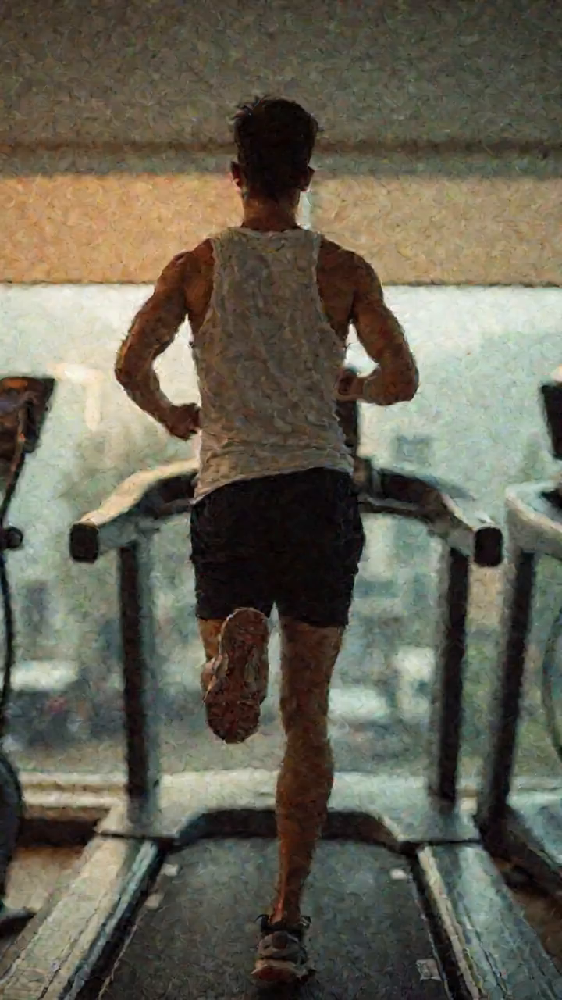
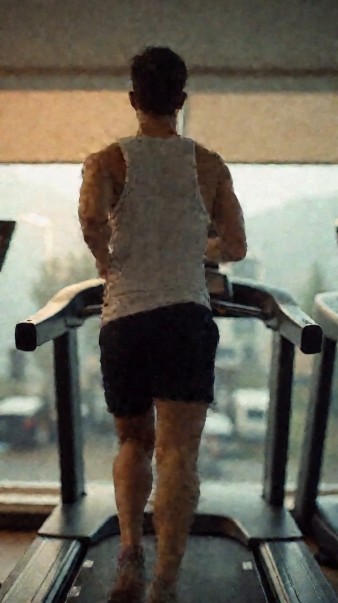
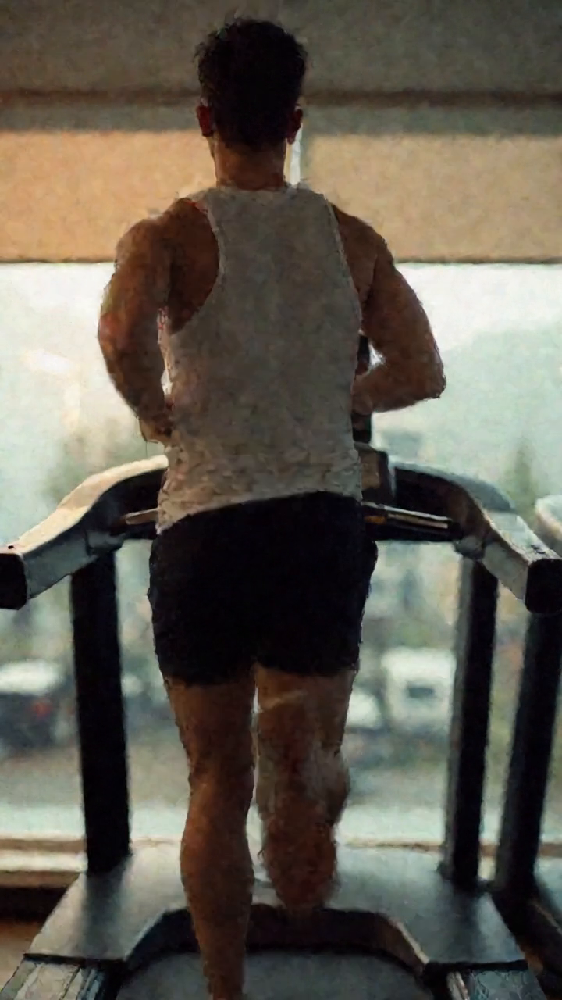
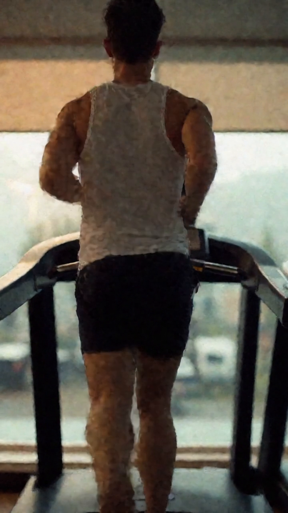
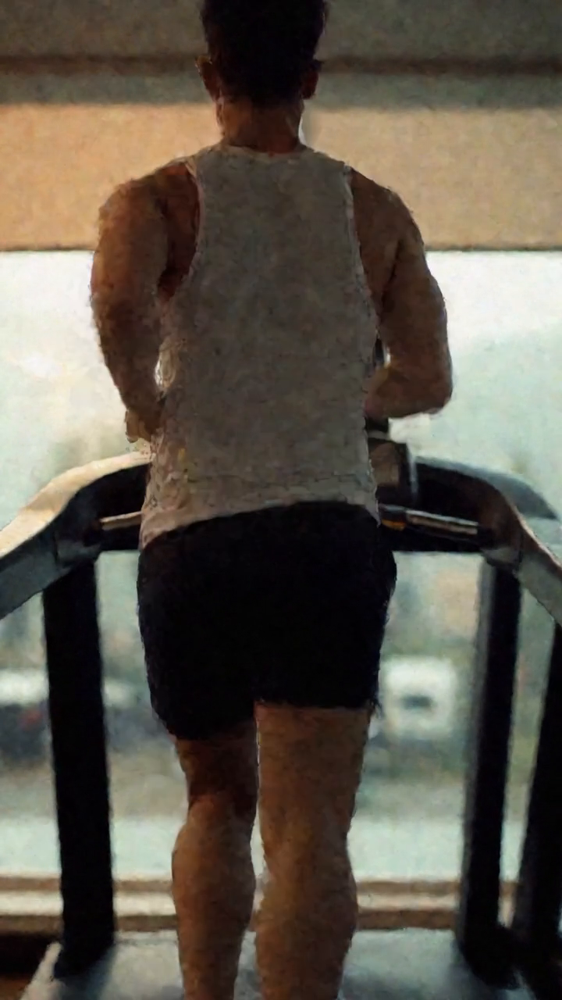

Hunyuan — מהיר ונקי ✓
אותו רץ — עכשיו פי-3 מהיר, בלי רגל נעלמת
⏱️ 6.3 דק' (היה ~20)
🦵 שתי רגליים לכל האורך
🎞️ 24fps חלק
🔍 חד ומפורט
בקרת-אנטומיה — הרגליים נשארות לכל אורך התנועה





התחלהסוף ◄
איך האצנו: EasyCache (מיחזור צעדים) + 12 צעדים במקום 20 + שלילה חזקה נגד "רגל נעלמת" + בקרה ויזואלית על 13 פריימים.
הבא: אפשר לדחוף עוד ל-1080p עם שלב-הגדלה (SR), ולבנות את מערכת-הבמאי — סוכנים שמתכננים ריאל שלם (hook → סצנות → כיתובים) לסרטונים ארוכים.